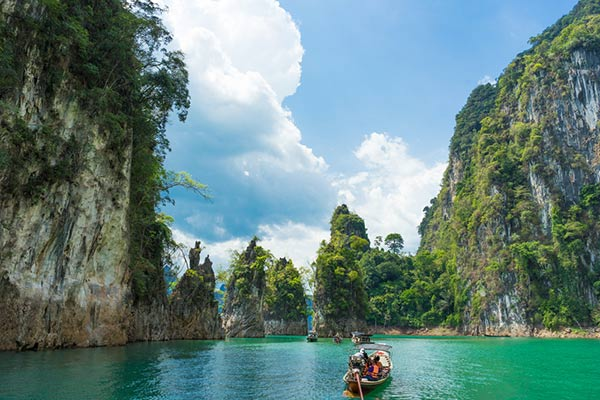
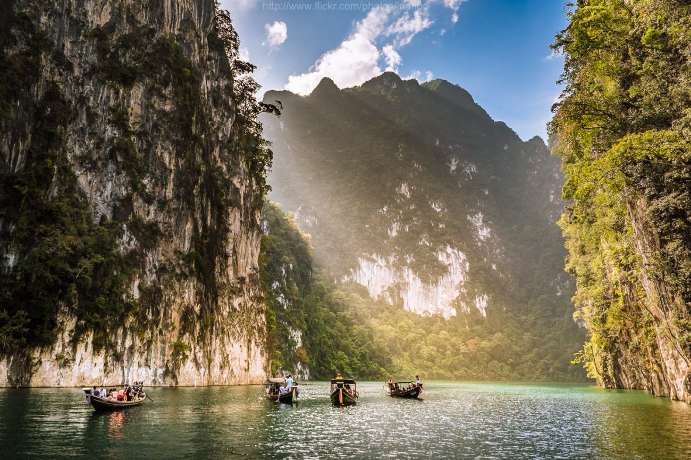
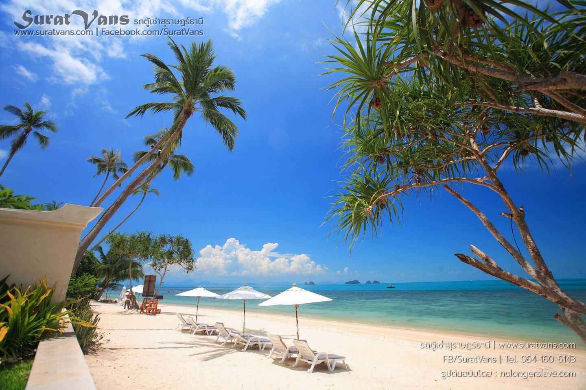
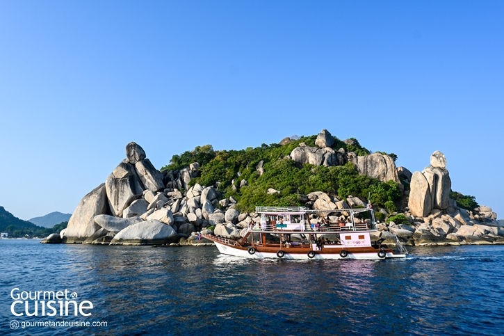
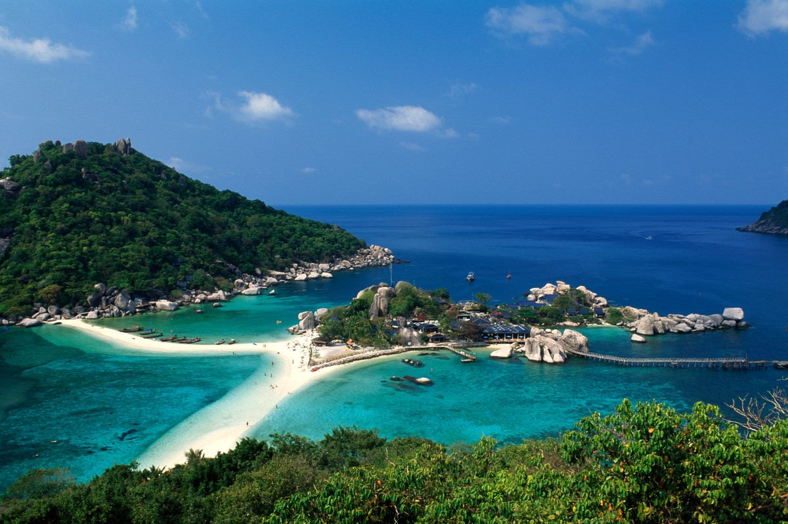
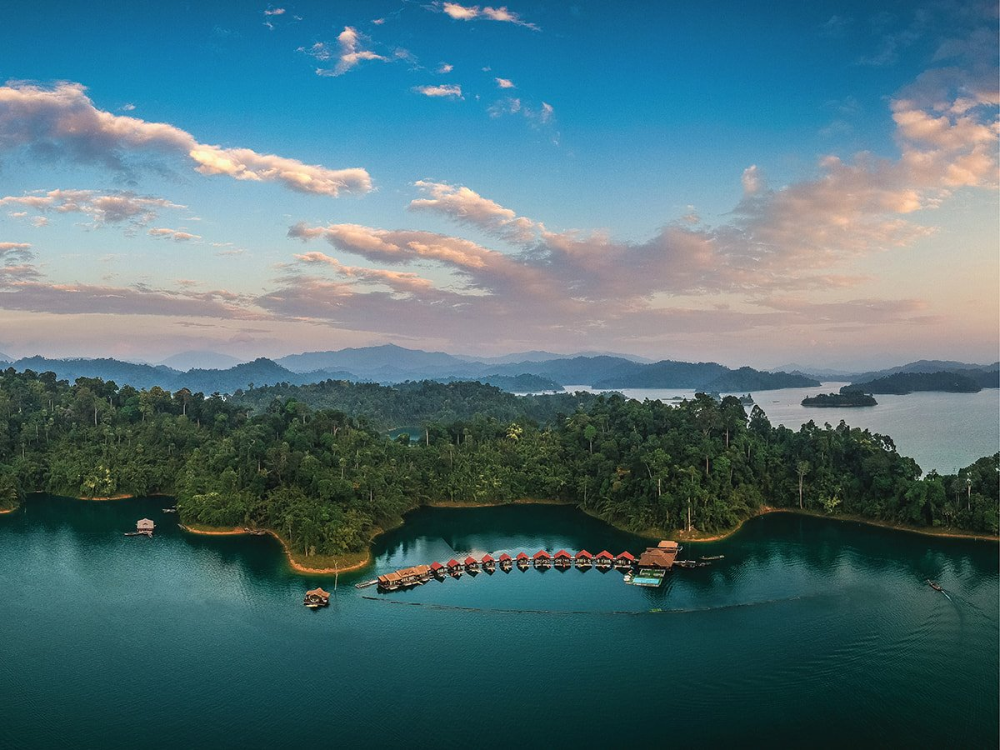

ข้อมูลเบื้องต้นของจังหวัดสุราษฎร์ธานี
สุราษฎร์ธานี เป็นจังหวัดที่มีขนาดใหญ่ที่สุดในภาคใต้ เต็มไปด้วยความอุดมสมบูรณ์ทั้งผืนป่าเขาอันเขียวขจีและหมู่เกาะชื่อดังระดับโลก เช่น เกาะสมุย เกาะพะงัน และเกาะเต่า รวมถึงเขื่อนรัชชประภาที่มีทัศนียภาพงดงามดั่งกุ้ยหลิน เป็นจุดหมายปลายทางยอดนิยมของนักท่องเที่ยวจากทั่วทุกมุมโลก
3 สถานที่ท่องเที่ยวห้ามพลาด
เจาะลึกสถานที่ไฮไลต์อันงดงามของจังหวัดสุราษฎร์ธานี พร้อมภาพบรรยากาศ
1. เขื่อนรัชชประภา (เขื่อนเชี่ยวหลาน)
เขื่อนรัชชประภา หรือที่รู้จักกันในชื่อ เขื่อนเชี่ยวหลาน ได้รับฉายาว่า "กุ้ยหลินเมืองไทย" โดดเด่นด้วยทัศนียภาพของผืนน้ำสีเขียวมรกตใสสะอาด และยอดเขาหินปูนรูปร่างแปลกตานานาชนิด พร้อมแพพักริมน้ำบรรยากาศสุดโรแมนติก
📷 เขื่อนรัชชประภา


2. เกาะสมุย
เกาะสมุย เกาะตากอากาศยอดนิยมระดับโลก มีหาดทรายขาวละเอียด น้ำทะเลสีฟ้าคราม สวนมะพร้าวริมชายหาด และสิ่งอำนวยความสะดวกครบครัน พร้อมทั้งจุดชมวิวและแลนด์มาร์กชื่อดังอย่างหินตาหินยาย
📷 เกาะสมุย

3. เกาะเต่า
เกาะเต่า สวรรค์ของนักดำน้ำตื้นและดำน้ำลึก มีโลกใต้ทะเลที่อุดมสมบูรณ์ แนวปะการังที่สวยงาม และน้ำทะเลใสแจ๋ว สามารถมองเห็นปะการังและปลาสวยงามได้อย่างชัดเจน พร้อมเกาะนางยวนอันเลื่องชื่อ
📷 เกาะเต่า


ร้านอาหารและของกินขึ้นชื่อ
ภูณิศา
เมนูแนะนำ: ทอดมันภูณิศา (สอดไส้ไข่เค็ม), แกงส้มปลากะพง, ใบเหลียงผัดไข่, ยำภูณิศา
ร้านอาหารใต้รสเด็ด บรรยากาศดีมาก มองเห็นวิวแม่น้ำตาปีและภูเขา ได้รับรางวัลมิชลินไกด์ (Michelin Bib Gourmand)
📍 เปิดพิกัด GPS ร้านอาหารที่พักแนะนำสุดฟิน

500 Rai Floating Resort (แพ 500 ไร่)
สไตล์: แพพักลอยน้ำสุดหรูท่ามกลางเขื่อนเชี่ยวหลาน
ที่พักแพลอยน้ำระดับลักชูรีกลางเขื่อนรัชชประภา สัมผัสวิวขุนเขาและผืนน้ำสีมรกตแบบพาโนรามา พร้อมกิจกรรมพายเรือคายัคและชมธรรมชาติอย่างเต็มอิ่ม
📍 เปิดพิกัด GPS ที่พัก